A 78-year-old curmudgeonly balloon salesman, is not your average hero. When he ties thousands of balloons to his house and flies away to the wilds of South America, he finally fulfills his lifelong dream of adventure. But after Carl discovers an 8-year-old stowaway named Russell, this unlikely duo soon finds themselves on a hilarious journey in a lost world filled with danger and surprises.
Carl Fredricksen is not your average hero. He's a retired balloon salesman who, at the age of 78, is forced to leave the house he and his late wife Ellie built together. But instead of moving into the old folks' home, Carl takes action. He ties thousands of balloons to the roof, lifts the house into the air, and sets off toward South America, finally fulfilling the promise he made to his wife so many years before.
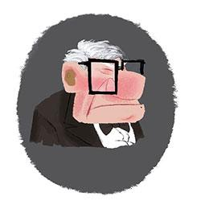
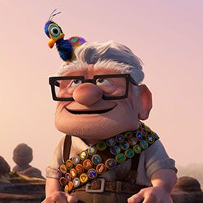
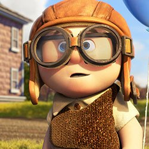
Russell is an enthusiastic and persistent 8-year-old Junior Wilderness Explorer from Tribe 54, Sweat Lodge 12. Armed with a backpack laden with official Wilderness Explorer camping gear, Russell is ready for the wilderness! There's just one catch: he's never actually left the city. All his knowledge of the outdoors comes from books, and his sole camping experience was in his own living room.
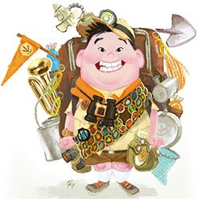
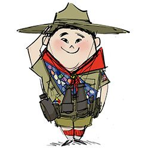


Dug is a lovable golden retriever living in the wilds of Paradise Falls as part of the dog pack searching for a rare flightless bird. Like the rest of his pack, Dug is outfitted with a remarkable high-tech collar that translates his thoughts into speech. But Dug is mocked as the nerd of the pack. Sent into the jungle on a "special" mission, Dug accidentally succeeds when he discovers the bird following Carl and Russell.
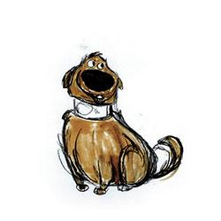


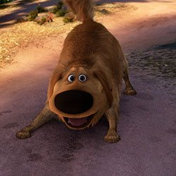
This bird is hidden from the world in remote Paradise Falls habitat. Very few know that this scientifically invaluable creature exists, but Carl and Russell stumble upon the bird, and Russell names her Kevin after he discovers they share a sweet tooth. Kevin and Russell bond instantly, and despite the bird's propensity to swallow Carl's walker, Kevin joins the latest and most unlikely carl's pack.
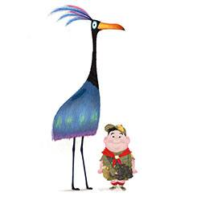


In 1930s, rich, clever, and handsome muntz is a beacon of hope for a down-and-out American public. He inspires his biggest fans, youngsters Carl and Ellie, to parrot his famous mantra "adventure is out there!" Traveling the globe many times over in his massive self-designed airship, he discovers the world's treasures: priceless historic relics, amazing scientific discoveries, and exotic flora and fauna never before seen.
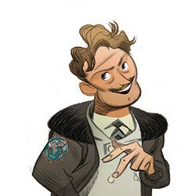
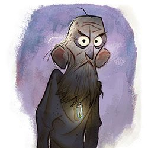


Deep in the jungles of Paradise Falls resides a dog pack on a mission to capture a rare bird that their master is pursuing. Just like their rejected comrade Dug, all the pack dogs have high-tech collars that give them unusual abilities especially designed for sinister hunting expeditions, including GPS tracking and translating their thoughts into speech. Alpha, the pack leader, is a black-as-night Doberman Pinscher.


Ellie is an exuberant, adventurous girl who dreams of exploring the world. She and Carl first bond over their shared admiration for legendary explorer Charles F. Muntz. They pledge to travel together to Paradise Falls—the world's tallest waterfall, deep in the South American rainforest. As the couple settle into their married life, their grandiose plans are set aside as they navigate the ups and downs of their everyday lives.


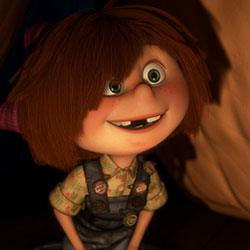

Unlike most stories about leaving home, Up needed a house that would go along for the journey. The Pixar team treated Carl’s house like a film character, touring vintage Oakland and Berkeley neighborhoods to cast for the right mix of comfort and familiarity, with just a touch of melancholy. “We were trying to make Carl’s house look like your grandparents’ house smelled,” explained Producer Jonas Rivera.
Carl’s epic adventure required a destination both fantastic and plausible. When Director Pete Docter happened on a television documentary about the mysterious tepuis of South America, he discovered the perfect world to explore. The massive mile-high plateaus in Venezuela are among the most uncharted places on Earth. Pixar sent a team of artists for a look, and the film's bizarre rock formations, exotic flora, towering waterfall, and fog-shrouded labyrinth can be traced to tepui landscapes. So fantastic were the images, Docter wondered if the very real Tepuis might look too incredible.
With Charles Muntz, the most fabled adventurer of his day, the filmmakers gave him the 1930s’ most state-of-the-art airship. Encouraged to indulge in size and detail, the artists created a half-mile-long art deco masterpiece filled with the spoils of a hero turned villain. Still, there were issues of how far to take the airship. “We had a trophy room with an Easter Island head in there,” recalled Production Artist Noah Klocek. “At one point John Lasseter said 'no, that would sink the ship'.”
A colorscript is a sequence of small pastel drawings or paintings used to emphasize color in each scene and establish a
film's visual language.
“While Ellie is alive, our color palette is heavily saturated. She brings color into Carl’s life. When she’s gone, the palette is de-saturated to shades of gray. When Carl blows up the balloons to begin his journey, we bring back the memory of Ellie through those saturated, beautiful colors. Any time we have life or movement forward, we use color saturation. But when there is impending doom, we almost go to black and white.”
- Ricky Nierva, Production Designer
“Adventure is out there!” is the familiar motto from Up that inspired many. And the directors and artists proved it to themselves when they sought firsthand reference to design the pinnacle world where Carl’s journey would end. Together, they climbed mountains, trampled through jungle, and even got caught in a storm atop a tepui mountain in South America. “The research trip to Venezuela was one of the highlights of my career,” said Production Designer Ricky Nierva, “but I’m also glad we made it back alive to make the movie!”
DIRECTED BY PETE DOCTER
CO-DIRECTED BY BOB PETERSON
PRODUCED BY JONAS RIVERA
EXECUTIVE PRODUCER JOHN LASSETER, ANDREW STANTON
ASSOCIATE PRODUCER DENISE REAM
STORY BY PETE DOCTER, BOB PETERSON, TOM MCCARTHY
SCREENPLAY BY BOB PETERSON, PETE DOCTER
MUSIC BY RONNIE DEL CARMEN
STORY SUPERVISOR JASON KATZ
FILM EDITOR KEVIN NOLTING
PRODUCTION DESIGNER RICKY NIERVA
SUPERVISING TECHNICAL DIRECTOR STEVE MAY
PRODUCTION MANAGER MARK NIELSEN
SUPERVISING ANIMATORS SCOTT CLARK
DIRECTOR OF PHOTOGRAPHY-CAMERA PATRICK LIN
DIRECTOR OF PHOTOGRAPHY-LIGHTING JEAN-CLAUDE KALACHE
CHARACTER SUPERVISOR THOMAS JORDAN
SETS SUPERVISOR JOHN HALSTEAD
EFFECTS SUPERVISOR GARY BRUINS
SIMULATION & CROWDS SUPERVISOR JOHN POTTEBAUM
SHADING ART DIRECTION BRYN IMAGIRE
RENDERING SUPERVISOR HUMERA YASMIN KHAN
SOUND DESIGNER TOM MYERS
PRE PRODUCTION PRODUCER KORI RAE
POST PRODUCTION SUPERVISOR PAUL CICHOCKI
CASTING BY
KEVIN REHER, C.S.A.
NATALIE LYON, C.S.A.
CARL FREDRICKSEN ED ASNER
CHARLES MUNTZ CHRISTOPHER PLUMMER
RUSSELL JORDAN NAGAI
DUG BOB PETERSON
BETA DELROY LINDO
GAMMA JEROME RANFT
ALPHA BOB PETERSON